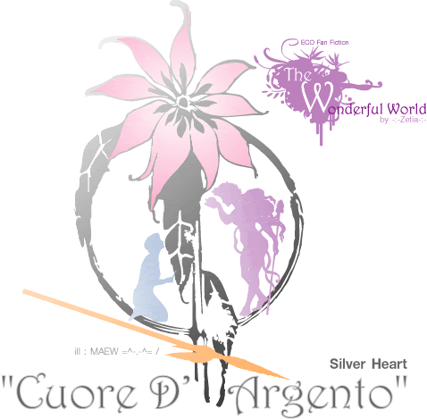
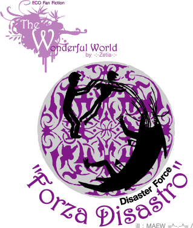
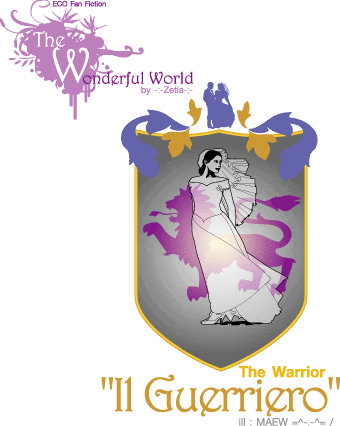

- บทนำ : "IL Inizio" - [ The Beginning ]

- โค้ด: เลือกทั้งหมด
[IMG]http://i266.photobucket.com/albums/ii250/ukritoneko/eco/Sentimental/eco%20cartoon/fic%20j%20tear/The-Beginning.gif[/IMG]
- ตำนานบทที่ I : "Riunione Miracolo" – [ The Miracle Meeting ]

- โค้ด: เลือกทั้งหมด
[IMG]http://i266.photobucket.com/albums/ii250/ukritoneko/eco/Sentimental/eco%20cartoon/fic%20j%20tear/The-Miracle-Meeting.gif[/IMG]
- ตำนานบทที่ II : "Irreale" – [ Unreal ]

- โค้ด: เลือกทั้งหมด
[IMG]http://i266.photobucket.com/albums/ii250/ukritoneko/eco/Sentimental/eco%20cartoon/fic%20j%20tear/unreal.gif[/IMG]
- ตำนานบทที่ III : "Shadow Walking" – [ Ombra Passeggiate ] --- > Page 60

- โค้ด: เลือกทั้งหมด
[IMG]http://i266.photobucket.com/albums/ii250/ukritoneko/eco/Sentimental/eco%20cartoon/fic%20j%20tear/Shadow-Walking.gif[/IMG]
- ตำนานบทที่ IV : "Silver Heart" – [ Cuore D'Argento ]

- โค้ด: เลือกทั้งหมด
[IMG]http://i266.photobucket.com/albums/ii250/ukritoneko/eco/Sentimental/eco%20cartoon/fic%20j%20tear/Silver-Heart-01.gif[/IMG]
- ตำนานบทที่ V : "Tenebre – [ Darkness ]"

- โค้ด: เลือกทั้งหมด
[IMG]http://i266.photobucket.com/albums/ii250/ukritoneko/eco/Sentimental/eco%20cartoon/fic%20j%20tear/Darkness.gif[/IMG]
- ตำนานบทที่ VI : "The Star , The Sky and The Moon – [ La Stella , Il Cielo e La Lu_na ]

- โค้ด: เลือกทั้งหมด
[IMG]http://i266.photobucket.com/albums/ii250/ukritoneko/eco/Sentimental/eco%20cartoon/fic%20j%20tear/The-Star-The-Sky-DO.gif[/IMG]
- ตำนานบทที่ VII : "The Cold War – [ La Guerra Fredda ]"
- โค้ด: เลือกทั้งหมด
[IMG]http://i266.photobucket.com/albums/ii250/ukritoneko/eco/Sentimental/eco%20cartoon/fic%20j%20tear/The-Cold-War.gif[/IMG]
- ตำนานบทที่ VIII : "Fake or Not – [ Fake o No ]"

- โค้ด: เลือกทั้งหมด
[IMG]http://i266.photobucket.com/albums/ii250/ukritoneko/eco/Sentimental/eco%20cartoon/fic%20j%20tear/Fake-or-Not.gif[/IMG]
- ตำนานบทที่ IX : "Disaster Force – [ Forza Disastro ]"

- โค้ด: เลือกทั้งหมด
[IMG]http://i266.photobucket.com/albums/ii250/ukritoneko/eco/Sentimental/eco%20cartoon/fic%20j%20tear/Disaster-Force.gif[/IMG]
- ตำนานบทที่ X : "The Warrior – [ Il Guerriero ]"

- โค้ด: เลือกทั้งหมด
[IMG]http://i266.photobucket.com/albums/ii250/ukritoneko/eco/Sentimental/eco%20cartoon/fic%20j%20tear/The-Warrior.gif[/IMG]
- ตำนานบทที่ XI : "The Bloody Flower – [ La Sanguinosa Fiore ]"
- โค้ด: เลือกทั้งหมด
[IMG]http://i266.photobucket.com/albums/ii250/ukritoneko/eco/Sentimental/eco%20cartoon/fic%20j%20tear/The-Bloody-Flower.gif[/IMG]
- ตำนานบทที่ XII : "To Heart – [ Per Cuore ]"

- โค้ด: เลือกทั้งหมด
[IMG]http://i266.photobucket.com/albums/ii250/ukritoneko/eco/Sentimental/eco%20cartoon/fic%20j%20tear/to-heart.gif[/IMG]
- ตำนานบทที่ XIII : "Question ? – [ Domanda ? ]"

- โค้ด: เลือกทั้งหมด
[img]http://i266.photobucket.com/albums/ii250/ukritoneko/eco/Sentimental/eco%20cartoon/fic%20j%20tear/Question.gif[/img]
ปล.ต้องขอโทษที่ไม่ได้ทำลิ้งค์ให้นะเงี๊ยว ช่วงนี้แมวยู้งยุ่ง =^-.-^=/